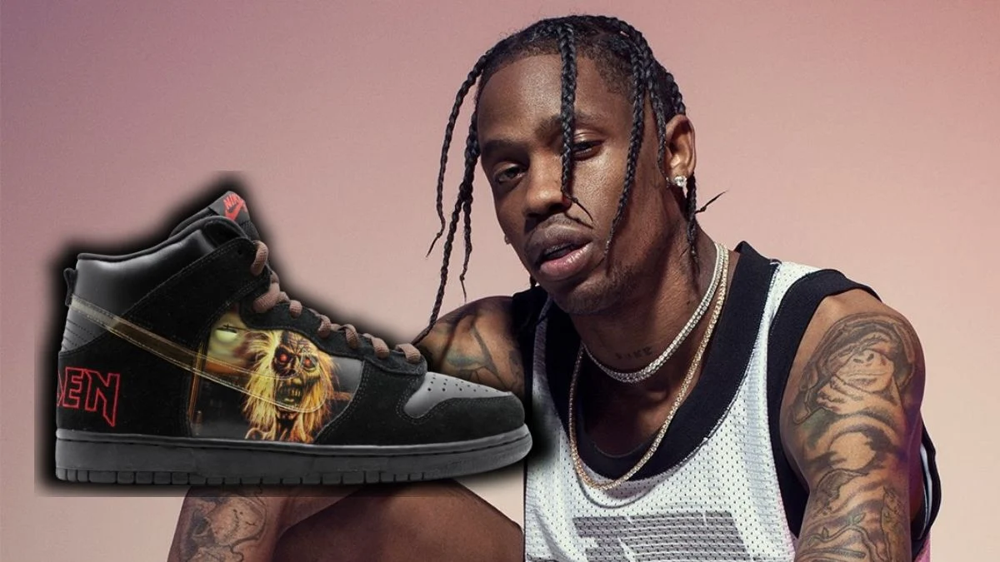
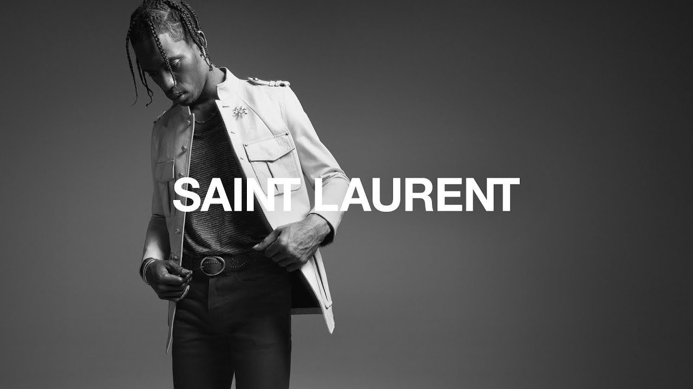

Travis Scott X NikeEm colaboração com o Travis Scott, a marca Jordan convida-te a representares uma lenda artística em desenvolvimento, juntamente com o jogador mais lendário do basquetebol. Décadas depois de as habilidades e o jogo feroz do MJ elevarem os limites deste desporto a novos patamares sem precedentes, o trabalho imaginativo do Scott impulsionou a música e a cultura da moda urbana com inovação e paixão. A própria coleção conta com a influência da herança de grandeza da marca Jordan e do sentido único de expressão criativa do Scott. Um grafismo estilizado com o posicionamento de assinatura da marca Cactus Jack sobrepõe-se à imagem do MJ numa t-shirt que se destaca. Realçados por detalhes de catos bordados, os dois pares de calças cargo são fabricados em algodão leve, resistente e não rasgável, estando repletas de bolsos para um look prático e altamente técnico. Apresentando igualmente um toque de grafismos bordados premium, o pullover, os calções e a camisola da coleção são fabricados com tecidos de malha elástica desgastada que parecem camurça ao toque. A mistura de estilo com simplicidade, utilidade e conforto intencionais evidencia outra colaboração especial entre a Jordan e a Jack. |
 |
Travis Scott X Playstation 5A parceria entre Travis Scott e PlayStation ainda vai gerar outros projetos. Depois do rapper ter realizado um “unboxing reimaginado do PlayStation 5“, ele garantiu que haverá novidades sobre esse relacionamento durante as próximas semanas. Em entrevista ao Forbes, o artista não revelou muitos detalhes, mas disse estar ansioso para compartilhar com os fãs tudo aquilo que ele e a marca PlayStation irão construir no futuro. A principal aposta para os novos projetos criados pela parceria entre Travis Scott e PlayStation é o uso do artista como parte criativa e essencial para o marketing de jogos do PlayStation 5. Além de músico, o rapper já demonstrou todas as suas habilidades empreendedoras ao cultivar relacionamentos com a Nike, McDonald’s e até a Epic Games. Por isso, a Sony deve investir nessa área de propaganda vinculada à imagem de Scott. Independentemente dos próximos projetos, a parceria entre Travis Scott e PlayStation já gerou rendimentos interessantes para ambos os lados. Segundo o artigo da Forbes, é esperado que o artista receba cerca de U$ 20 milhões em razão da campanha mundial do PS5. Claro que não só o músico ganhou com esse relacionamento, mas a Sony deve ter aprovado o resultado devido ao ótimo número de pré-vendas do PS5. |
Travis Scott X Saint LaurentTravis Scott está no seu auge, o cara é um dos rappers mais influentes dos últimos tempos, seu recém lançado álbum Astroworld foi muito bem recebido pela crítica e pelos seus fãs. E se não bastasse todo seu sucesso o cara agora vem estampando a campanha de Primavera/Verão 2019 da Saint Laurent. As imagens feitas pelo fotógrafo David Sams traz o astro todo cheio de estilo usando as peças assinadas pelo designer Anthony Vaccarello, confira só. |
 |